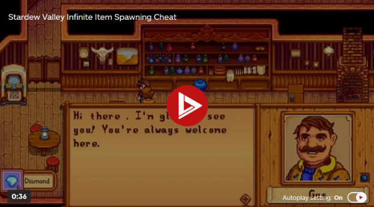

UPDATED JAN 16, 2022
Stardew Valley is a farming simulation game, where you are a young man or woman who inherited an old farm. From here, you must set out to repair, fix up and improve the farm. You will have to collect resource, raise animals, and plant crops, as you work towards having the best life possible.
IGN's Stardew Valley Wiki guide will teach you everything you need to know about this country-life RPG. Whether it's the basics of farming, tips and tricks for yielding better crops, exploring the hidden secrets within each Valley locationValley location, meeting the residents, or potentially forming a relationship, we've got you covered in our complete Stardew Valley guide below.
If you're new to Stardew Valley and want a basic run-through, or you're returning after a long time away and need a catch-up, these are the best pages to start with.
If you want help with items in Stardew Valley, as well as the main Items hub, there are some specific pages to check out.
There are a few different regions/locations in Stardew Valley, and from here you can check a breakdown of any of them. Some locations have other locations in them, like the Secret Woods in the Cindersap Forest. These are the main hubs in Stardew Valley.